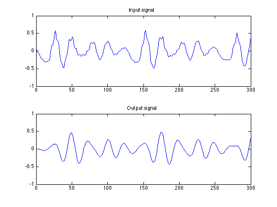
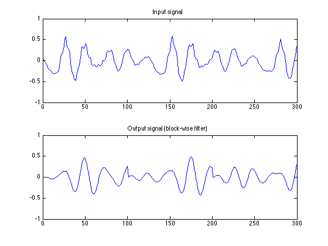
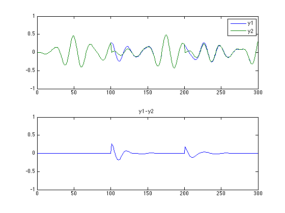
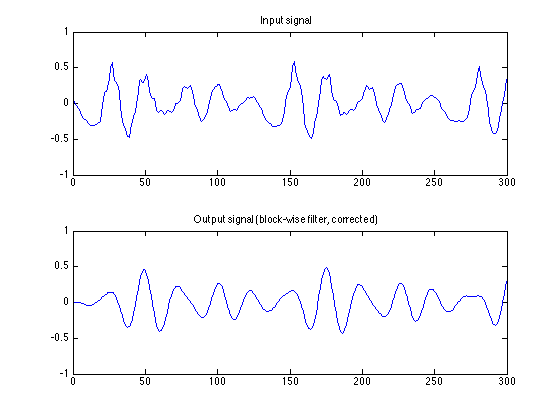
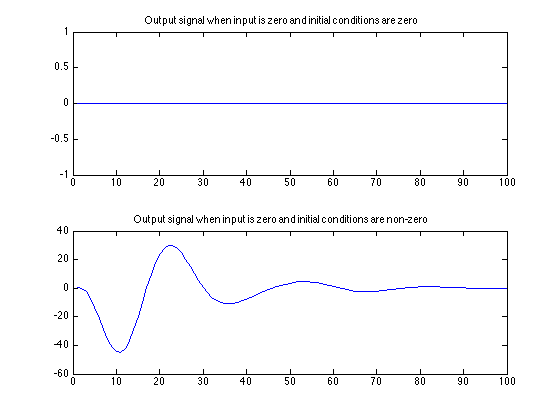

block_filter_demo
Illustrate block filtering in Matlab. It is necessary to set the initial conditions!
Contents
Using the function 'filter'
[sig, Fs] = wavread('author.wav'); N = 300; n = 1:N; % define a signal x = sig(1693 + n); % make a band-pass filter [b, a] = butter(2, [500 1000]*2/Fs); % filter signal x to get output signal y1 y1 = filter(b, a, x);
figure(1) clf subplot(2, 1, 1) plot(n, x) ylim([-1 1]) title('Input signal') subplot(2, 1, 2) plot(n, y1) ylim([-1 1]) title('Output signal') print -dpdf fig1
Block filtering
Filter each block (of length 100) individually. Does it give the same result as y1?
y2 = zeros(size(x)); % initialize output signal y2( 1:100) = filter(b, a, x( 1:100)); y2(101:200) = filter(b, a, x(101:200)); y2(201:300) = filter(b, a, x(201:300)); figure(1) clf subplot(2, 1, 1) plot(n, x) title('Input signal') ylim([-1 1]) subplot(2, 1, 2) plot(n, y2) title('Output signal (block-wise filter)') ylim([-1 1]) print -dpdf fig2
Compare
The result y2 is not the same as y1. With each block, y1 starts at zero. That is because 'filter' assumes the initial conditions are zero.
It can be seen that using the wrong initial conditions results in a transient error signal.
figure(1) clf subplot(2, 1, 1) plot(n, y1, n, y2) legend('y1', 'y2') ylim([-1 1]) subplot(2, 1, 2) plot(n, y1 - y2) title('y1 - y2') ylim([-1 1]) print -dpdf fig3
initial conditions (and final conditions)
Can we set the initial conditions to be non-zero in the 'filter' function? If so, what shall we set them to? Note Zf and Zi in the documentation for 'filter'. We can set the initial conditions (Zi). We can also get the final conditions (Zf).
help filter
FILTER One-dimensional digital filter.
Y = FILTER(B,A,X) filters the data in vector X with the
filter described by vectors A and B to create the filtered
data Y. The filter is a "Direct Form II Transposed"
implementation of the standard difference equation:
a(1)*y(n) = b(1)*x(n) + b(2)*x(n-1) + ... + b(nb+1)*x(n-nb)
- a(2)*y(n-1) - ... - a(na+1)*y(n-na)
If a(1) is not equal to 1, FILTER normalizes the filter
coefficients by a(1).
FILTER always operates along the first non-singleton dimension,
namely dimension 1 for column vectors and non-trivial matrices,
and dimension 2 for row vectors.
[Y,Zf] = FILTER(B,A,X,Zi) gives access to initial and final
conditions, Zi and Zf, of the delays. Zi is a vector of length
MAX(LENGTH(A),LENGTH(B))-1, or an array with the leading dimension
of size MAX(LENGTH(A),LENGTH(B))-1 and with remaining dimensions
matching those of X.
FILTER(B,A,X,[],DIM) or FILTER(B,A,X,Zi,DIM) operates along the
dimension DIM.
See also FILTER2, FILTFILT, FILTIC.
Note: FILTFILT and FILTIC are in the Signal Processing Toolbox.
Overloaded methods:
timeseries/filter
SigLogSelector.filter
gf/filter
channel.filter
mfilt.filter
adaptfilt.filter
LagOp/filter
fints/filter
fxptui.filter
dfilt.filter
Reference page in Help browser
doc filter
Block filtering (corrected)
Set the initial conditions for each block as the final conditions for the previous block.
y3 = zeros(size(x)); % initialize output signal [y3( 1:100), states] = filter(b, a, x( 1:100)); [y3(101:200), states] = filter(b, a, x(101:200), states); [y3(201:300), states] = filter(b, a, x(201:300), states); figure(1) clf subplot(2, 1, 1) plot(n, x) title('Input signal') ylim([-1 1]) subplot(2, 1, 2) plot(n, y3) title('Output signal (block-wise filter, corrected)') ylim([-1 1]) print -dpdf fig4
Zero-input
Note that when the initial conditions are non-zero, then the output of the filter will be non-zero even if the input signal is zero!
states = randn(4,1)
states =
0.3188
-1.3077
-0.4336
0.3426
y_init_zero = filter(b, a, zeros(1, 100) ); y_init_nonzero = filter(b, a, zeros(1, 100), states); figure(1) clf subplot(2, 1, 1) plot(y_init_zero) title('Output signal when input is zero and initial conditions are zero') subplot(2, 1, 2) plot(y_init_nonzero) title('Output signal when input is zero and initial conditions are non-zero')